Control
No change. The reference every other arm is read against.
| benchmark | metric | value | reference |
|---|---|---|---|
| Open loop — 5 s AR | ADE | 17.63 cm | zero 18.99 · vs zero +1.36 · vs control +0.00 |
| OMWC | 0.677 | ground truth 0.074 | |
| δavg | 47.1 % | higher is better | |
| survival | 39.6 % | higher is better | |
| GR-1 — PnPCanToBowl | success | 0 / 3 | native-link decode |
| final hand–object | median 17.37 cm | episodes 11.2, 17.4, 29.8 | |
| DexJoCo | not built — installed and inventoried (11 tasks), but no Allegro point sampler, no link table, no policy-server wiring | ||
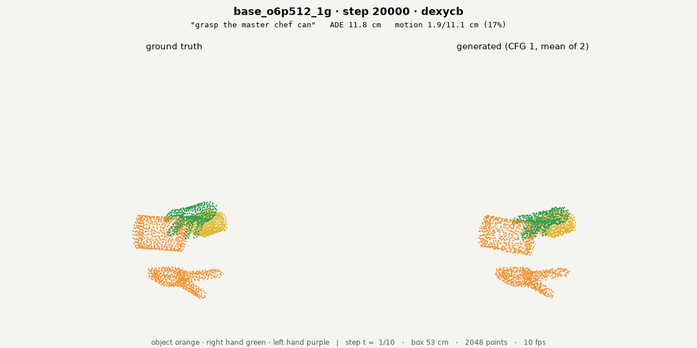
E1 · contact flag + head
A frame-0 contact flag enters as an additive token embedding, and a head emits one contact logit per point per frame (BCE). Asks the model WHETHER a point is touching.
| benchmark | metric | value | reference |
|---|---|---|---|
| Open loop — 5 s AR | ADE | 17.40 cm | zero 18.99 · vs zero +1.59 · vs control +0.23 |
| OMWC | 0.633 | ground truth 0.074 | |
| δavg | 46.2 % | higher is better | |
| survival | 38.4 % | higher is better | |
| GR-1 — PnPCanToBowl | success | 0 / 3 | native-link decode |
| final hand–object | median 27.13 cm | episodes 14.8, 27.1, 115.9 | |
| DexJoCo | not built — installed and inventoried (11 tasks), but no Allegro point sampler, no link table, no policy-server wiring | ||
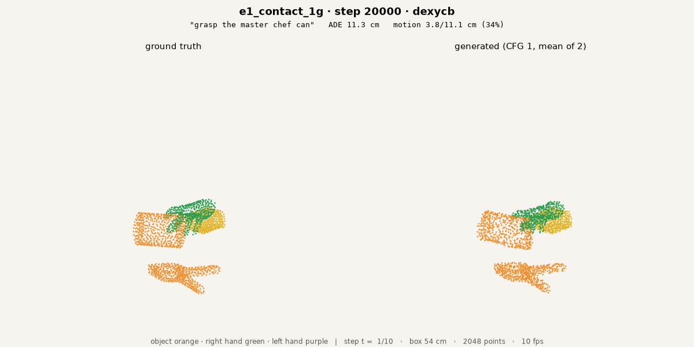
E2 · partner identity
Widens E1's question from whether to WHO: per point and frame, two softmaxes over the partner's entity (scored against each entity's own conditioning vector, so it is native to a variable object count) and the partner's part.
| benchmark | metric | value | reference |
|---|---|---|---|
| Open loop — 5 s AR | ADE | 17.41 cm | zero 18.99 · vs zero +1.57 · vs control +0.22 |
| OMWC | 0.607 | ground truth 0.074 | |
| δavg | 47.1 % | higher is better | |
| survival | 38.6 % | higher is better | |
| GR-1 — PnPCanToBowl | success | 0 / 3 | native-link decode |
| final hand–object | median 12.86 cm | episodes 19.9, 12.9, 9.3 | |
| DexJoCo | not built — installed and inventoried (11 tasks), but no Allegro point sampler, no link table, no policy-server wiring | ||
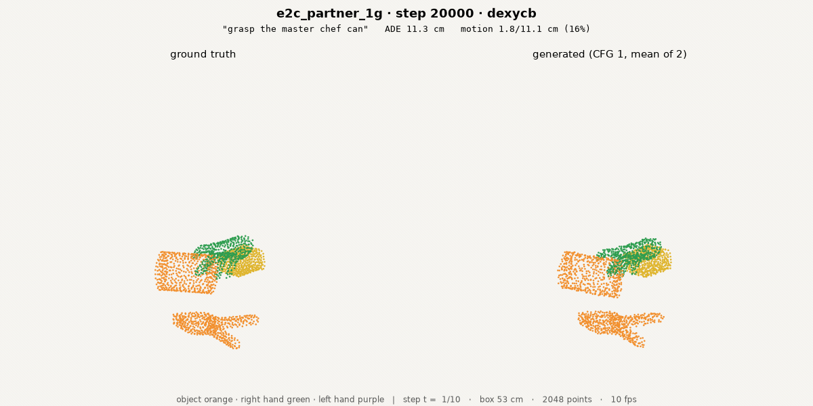
E3 · two-stream blocks
Hand and object tokens get their own norms, QKV and MLPs while attention stays one joint operation over all tokens. Doubled block parameters at the same FLOPs.
| benchmark | metric | value | reference |
|---|---|---|---|
| Open loop — 5 s AR | ADE | 17.90 cm | zero 18.99 · vs zero +1.09 · vs control -0.26 |
| OMWC | 0.786 | ground truth 0.074 | |
| δavg | 48.4 % | higher is better | |
| survival | 40.6 % | higher is better | |
| GR-1 — PnPCanToBowl | success | 0 / 3 | native-link decode |
| final hand–object | median 24.66 cm | episodes 24.7, 30.9, 23.9 | |
| DexJoCo | not built — installed and inventoried (11 tasks), but no Allegro point sampler, no link table, no policy-server wiring | ||
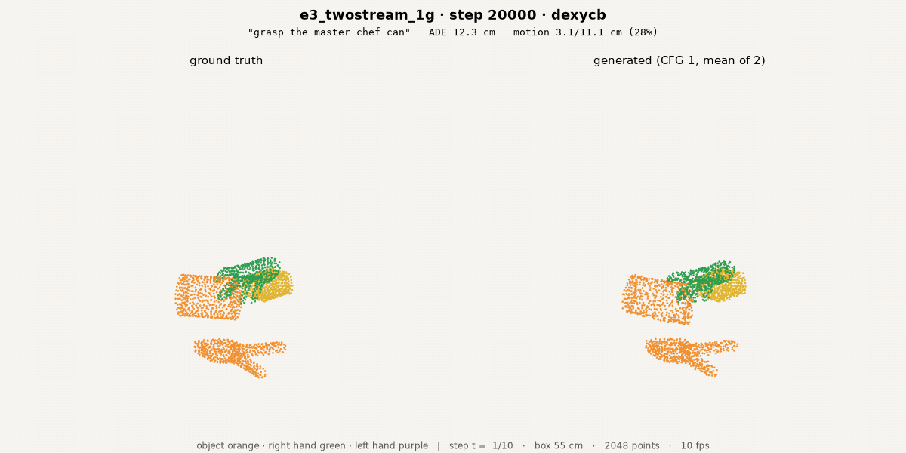
E5 · continuous correspondence
E2 with the 34-way part CLASS replaced by a 3-D regression of the partner's canonical offset. Tests ManiDext's finding that continuous correspondence beats discrete part labels. Open loop read at ckpt_0019983, 17 steps short of the others: the 2.7 h wall-clock cap stopped it before 20,000.
| benchmark | metric | value | reference |
|---|---|---|---|
| Open loop — 5 s AR | ADE | 16.59 cm | zero 18.99 · vs zero +2.40 · vs control +1.04 |
| OMWC | 0.503 | ground truth 0.074 | |
| δavg | 44.8 % | higher is better | |
| survival | 34.9 % | higher is better | |
| GR-1 — PnPCanToBowl | success | 0 / 3 | native-link decode |
| final hand–object | median 18.65 cm | episodes 24.5, 15.5, 18.7 | |
| DexJoCo | not built — installed and inventoried (11 tasks), but no Allegro point sampler, no link table, no policy-server wiring | ||
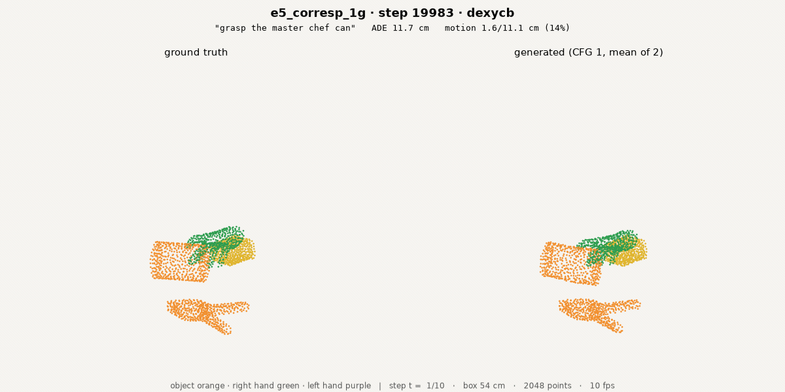
E6 · E1 + E2 together
Both contact mechanisms at once. They won on different axes alone; this asks whether the gains compose or overlap.
| benchmark | metric | value | reference |
|---|---|---|---|
| Open loop — 5 s AR | ADE | 17.10 cm | zero 18.99 · vs zero +1.88 · vs control +0.53 |
| OMWC | 0.605 | ground truth 0.074 | |
| δavg | 46.3 % | higher is better | |
| survival | 37.7 % | higher is better | |
| GR-1 — PnPCanToBowl | success | 0 / 3 | native-link decode |
| final hand–object | median 17.39 cm | episodes 17.4, 16.3, 94.1 | |
| DexJoCo | not built — installed and inventoried (11 tasks), but no Allegro point sampler, no link table, no policy-server wiring | ||
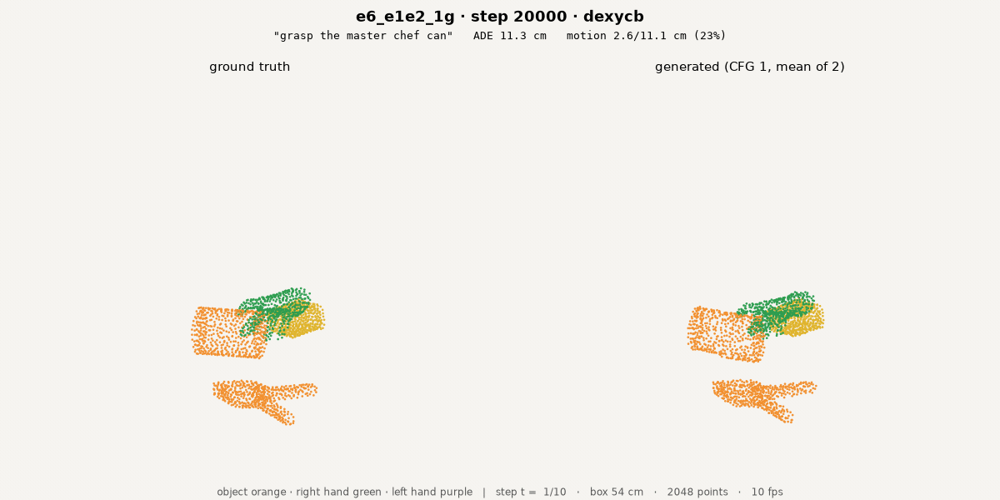
A2 · object-motion auxiliary
Each object patch predicts its own entity's rigid motion from frame 0 as (6-D rotation, translation). Imported from HumanEgo, which credits this objective with +17.5 points.
| benchmark | metric | value | reference |
|---|---|---|---|
| Open loop — 5 s AR | ADE | 17.54 cm | zero 18.99 · vs zero +1.45 · vs control +0.09 |
| OMWC | 0.680 | ground truth 0.074 | |
| δavg | 46.8 % | higher is better | |
| survival | 38.0 % | higher is better | |
| GR-1 — PnPCanToBowl | success | 0 / 3 | native-link decode |
| final hand–object | median 13.56 cm | episodes 22.3, 11.6, 13.6 | |
| DexJoCo | not built — installed and inventoried (11 tasks), but no Allegro point sampler, no link table, no policy-server wiring | ||
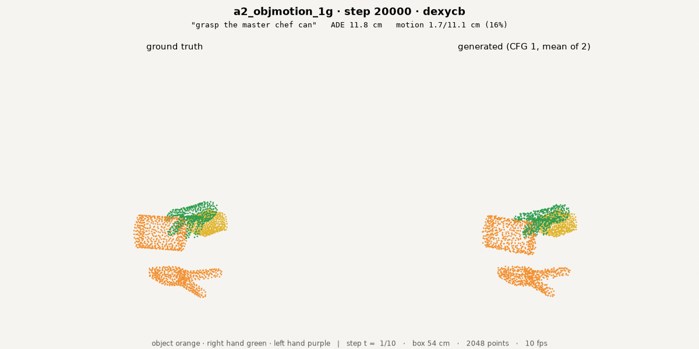
A3 · conditioning-frame noise
The frame-0 conditioning state is noised (sigma up to ~1 cm). Targets the train/deploy gap: both benchmarks replan from the model's own previous prediction, training never does.
| benchmark | metric | value | reference |
|---|---|---|---|
| Open loop — 5 s AR | ADE | 19.33 cm | zero 18.99 · vs zero -0.35 · vs control -1.70 |
| OMWC | 0.688 | ground truth 0.074 | |
| δavg | 44.2 % | higher is better | |
| survival | 38.8 % | higher is better | |
| GR-1 — PnPCanToBowl | success | 0 / 3 | native-link decode |
| final hand–object | median 31.62 cm | episodes 20.3, 31.6, 33.6 | |
| DexJoCo | not built — installed and inventoried (11 tasks), but no Allegro point sampler, no link table, no policy-server wiring | ||
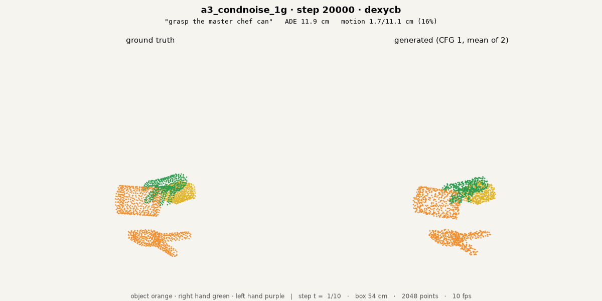
A4 · 10 % Sharpa co-training
10 % of sampled chunks come from Sharpa-retargeted robot-hand episodes.
| benchmark | metric | value | reference |
|---|---|---|---|
| Open loop — 5 s AR | ADE | 17.42 cm | zero 18.99 · vs zero +1.57 · vs control +0.21 |
| OMWC | 0.677 | ground truth 0.074 | |
| δavg | 47.4 % | higher is better | |
| survival | 40.2 % | higher is better | |
| GR-1 — PnPCanToBowl | success | 0 / 3 | native-link decode |
| final hand–object | median 21.40 cm | episodes 21.4, 21.5, 13.6 | |
| DexJoCo | not built — installed and inventoried (11 tasks), but no Allegro point sampler, no link table, no policy-server wiring | ||
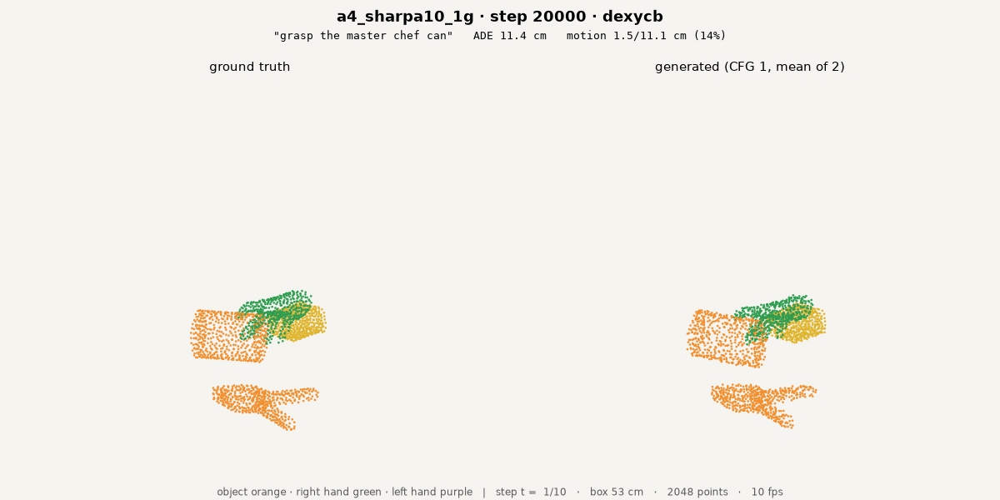
A5 · 25 % Sharpa co-training
The dose-response point: if co-training behaves like more data rather than a new domain, the gain should keep rising with the robot fraction.
| benchmark | metric | value | reference |
|---|---|---|---|
| Open loop — 5 s AR | ADE | 16.32 cm | zero 18.99 · vs zero +2.67 · vs control +1.31 |
| OMWC | 0.513 | ground truth 0.074 | |
| δavg | 45.9 % | higher is better | |
| survival | 36.8 % | higher is better | |
| GR-1 — PnPCanToBowl | success | 0 / 3 | native-link decode |
| final hand–object | median 17.93 cm | episodes 15.8, 17.9, 20.4 | |
| DexJoCo | not built — installed and inventoried (11 tasks), but no Allegro point sampler, no link table, no policy-server wiring | ||
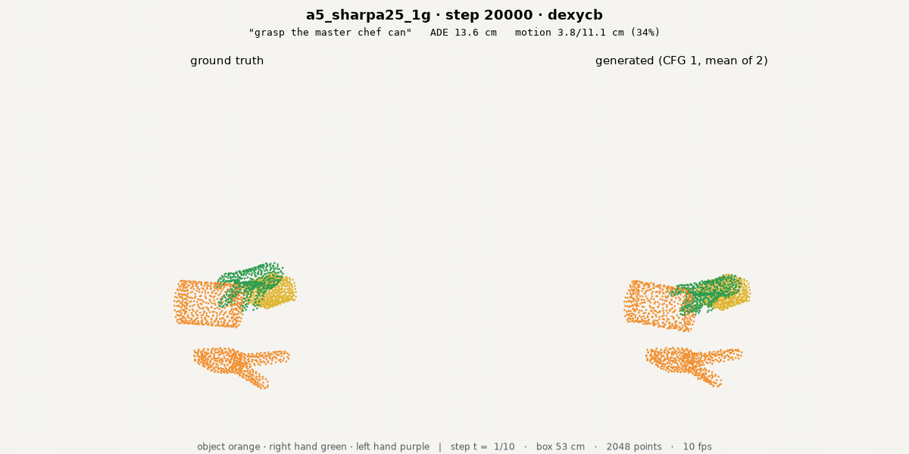
V1 · 10 % VITRA
10 % in-the-wild VITRA (Ego4D / EPIC / SSv2, partially observed objects at 128 surface points) mixed into the six lab corpora. First run of a corpus built on 2026-09-06.
| benchmark | metric | value | reference |
|---|---|---|---|
| Open loop — 5 s AR | ADE | 17.24 cm | zero 18.99 · vs zero +1.75 · vs control +0.40 |
| OMWC | 0.540 | ground truth 0.074 | |
| δavg | 44.9 % | higher is better | |
| survival | 35.5 % | higher is better | |
| GR-1 — PnPCanToBowl | success | 0 / 3 | native-link decode |
| final hand–object | median 28.41 cm | episodes 31.2, 28.4, 20.8 | |
| DexJoCo | not built — installed and inventoried (11 tasks), but no Allegro point sampler, no link table, no policy-server wiring | ||
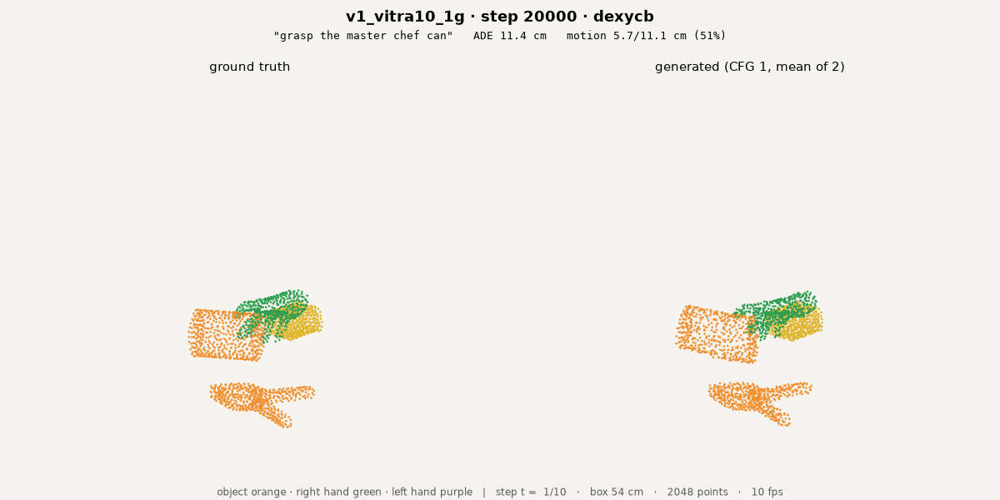
Setup
Shared by every arm; stated once so the sections above carry only what differs.
| Rig | no history · chunk_stride 4 · ≤6 objects × 512 pts + 2 hands × 512 · k = 8 part-major Hilbert patches · full 3-D attention · v-parameterisation · 16 Euler steps · EMA 0.999 · d512 / depth8 / heads8 ≈ 39.4 M |
| Optimiser | AdamW 3e-4, warmup 300, cosine to 0.1× · effective batch 32 · 1×H100 per arm |
| Corpus | v2: taco · arctic · dexycb · oakink2 · grab · hot3d · contact-window trim keeps 89.9 % (194,612 of 216,417 chunks) |
| Open loop | review/train/iroll.py --mode ar --max-chunks 5 · 10 episodes × 6 datasets · cfg 1.0 · the reporting basis |
| Closed loop | wam/eval/gr1_loop.py · PnPCanToBowl × 3 · replan every 4 executed frames · decode = per-link Procrustes + IK on the robot's OWN 12 links |
| Why 20k | a 6 h wall-clock cap (not a step target) truncated E3 at 35,322, E2 at 49,165 and A2 near 32,000; 20,000 is the largest checkpoint every arm has |
What this changes
- ✓Contact identity is the closed-loop lever.E2 wins GR-1 twice, on two bases and two code paths. Contact presence alone (E1) is worse than the control there.
- ✓Co-training has not saturated.25 % Sharpa beats 10 %, consistent with the earlier reading that it behaves like more data rather than a new domain. Confounded with more TACO — the retarget is TACO-only.
- !A published auxiliary did not transfer.HumanEgo credits object motion with +17.5 points; it is null here. Their state IS a 6-DoF pose token, so the auxiliary reinforces their native variable; ours is a dense point set where rigid motion is derived.
- ✗Nothing has moved the closed loop off zero.0/3 on every arm. Reach remains the binding failure and no arm addressed it.
Next
- ·Attack reach directlythe only thing standing between us and a non-zero GR-1 number
- ·Build the DexJoCo integrationAllegro point sampler + policy-server wiring; the column is empty until then
- ·Budget steps, not hoursthe wall-clock cap has silently truncated four arms across two nights
- ·More GR-1 episodesn = 3 cannot separate arms whose medians differ by a few centimetres
Artifacts & repro
- ·Configsconfigs/{base_o6p512,e1_contact,e2c_partner,e3_twostream,e5_corresp,e6_e1e2,a2_objmotion,a3_condnoise,a4_sharpa10,a5_sharpa25,v1_vitra10}_1g.yaml
- ·Harvestreview/auto/matrix_0908.json · scripts/matrix.py
- ·Related worknine systems read in detail — paper draft §2
- ·Supersededdeck #21 (2026-09-08-auxiliary-campaign) — same campaign in the slide format, kept as an archive